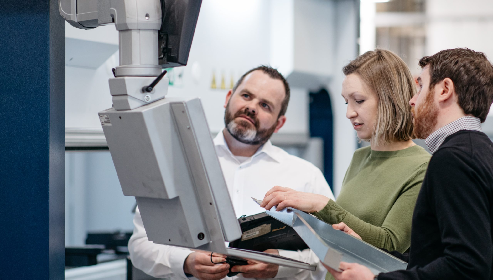
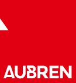

Target-account selection:
Identify organisations with the estate scale, operating problem, and investment capacity to justify a repeatable programme.


Oxford Infrastructure Partners × Aubren Limited
The aim would be a small number of well-researched conversations with organisations capable of becoming material customers. Oxford Infrastructure Partners would act as a pipeline accelerator alongside Ray’s team, helping convert technical evidence into account-specific commercial opportunities.
From there, OIP could prepare a tightly defined target list and one fully researched account campaign for review before any broader outreach.